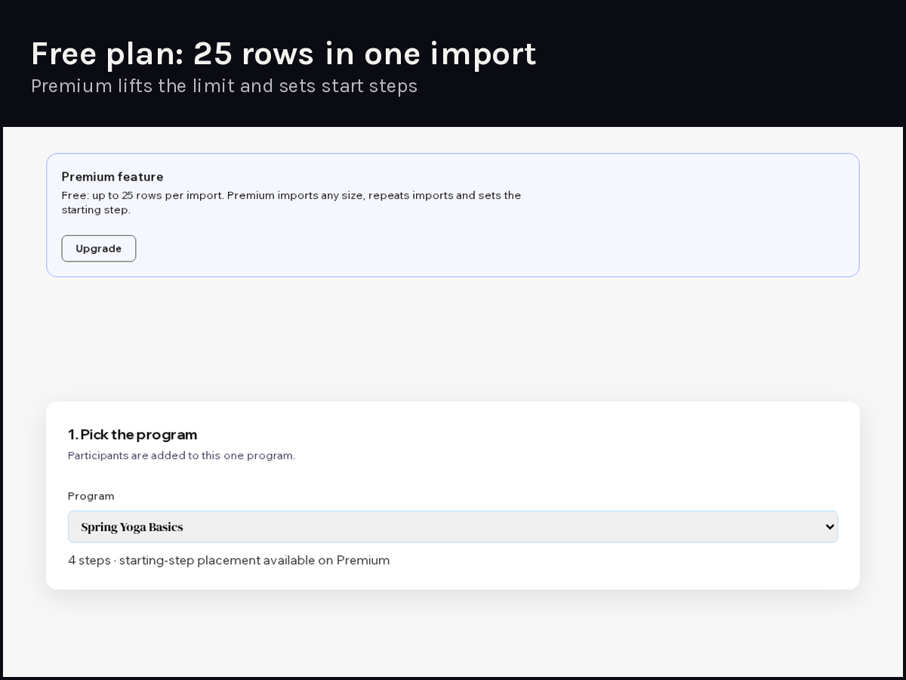

Program Roster: CSV Import
Add a whole cohort to a program from CSV
- Paste a CSV and preview every row
- Bad emails named by line number
- 25 rows per import on the free plan
- Start each learner at the right step

What it does
Program Roster adds a whole cohort of learners to an Online Program at once. Choose the program, paste a sheet or upload a CSV, and every row is checked before anything is written.
The preview lists each person with a status: ready to add, already in the program, a bad email address, a repeated line, or a starting step that does not exist. Errors name the line in your file, so fixing a list of thirty people takes a minute, not a whole evening.
Only email is required. First name, last name, group and starting step are optional, common header names work, and a template is one click away. When the file is ready, press Import and follow the progress bar. The result table says what happened to every row, and one download gives you the failed rows with their reasons, ready to fix and import again.
The free plan imports up to 25 rows at a time. Premium removes the limit, lets you import again whenever a new cohort starts, and places people at the right step instead of the beginning. Earlier article steps are marked complete, so a returning learner lands where they belong.
Importing the same file twice is safe: people who are already in the program are skipped, never added again.
Price
Free
- 25 rows per import
- Preview every row first
- Clear reason on each bad row
Premium
$9/month, $90 billed yearly ($7.50/month)
- Unlimited rows per import
- Start each person at a step
- Repeat imports any time
- Download the failures CSV